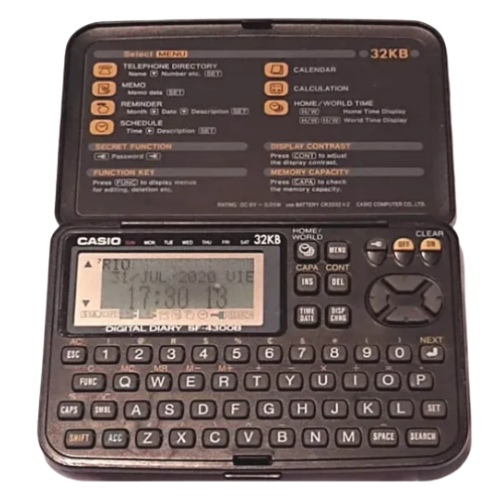

Bem-vindo ao Blog Memória Eletrônica
Nosso objetivo é preservar e compartilhar a história da tecnologia por meio de peças eletrônicas que
marcaram época. Aqui você encontrará desde clássicos como o Walkman e o Telejogo, até itens esquecidos
como secretárias eletrônicas e pagers. Cada peça tem sua história e importância no avanço da tecnologia
doméstica e pessoal.
Este espaço é também colaborativo: você pode expor seus próprios itens antigos, contar suas histórias e
participar do nosso acervo virtual. Junte-se a nós nessa jornada nostálgica pela memória eletrônica!
Nossos conteúdos são atualizados com frequência, trazendo curiosidades técnicas, propagandas antigas,
catálogos digitalizados e relatos de quem viveu a era analógica. Acreditamos que cada botão, cada chip e
cada ruído mecânico tem valor histórico e merece ser lembrado.
Se você encontrou um aparelho guardado no armário ou herdou algum item curioso de um parente, não deixe
de contribuir! Cada memória enviada ajuda a montar esse grande quebra-cabeça tecnológico que é a nossa
história coletiva.
Exponha um Eletrônico

Agenda Eletrônica
Símbolo dos anos 90, a agenda eletrônica foi a precursora dos smartphones em termos de organização
pessoal. Armazenava contatos, lembretes e compromissos em uma pequena tela LCD. Muito usada por
executivos e estudantes, era uma revolução portátil antes da popularização dos celulares.
Gramofone
O gramofone foi o primeiro reprodutor de música em massa, usando discos de vinil e uma agulha para
transmitir som mecanicamente. Com sua corneta icônica e funcionamento manual, ele marcou o
nascimento da indústria fonográfica e da audição doméstica de música.
Pager
O pager, ou bipe, foi essencial na comunicação rápida nas décadas de 80 e 90. Permitia receber
mensagens curtas via rádio e era amplamente usado por médicos, empresas e profissionais que
precisavam estar sempre acessíveis. Um toque e você sabia que era hora de agir.
Macintosh
O Macintosh, lançado em 1984, foi o primeiro computador pessoal com interface gráfica acessível ao
grande público. Compacto e revolucionário, trazia mouse e ícones na tela — um grande salto em
relação às interfaces baseadas em texto. É uma lenda da computação.
Polaroid
A Polaroid revolucionou a fotografia ao revelar imagens instantaneamente. Bastava um clique e, em
segundos, você tinha a foto impressa em mãos. Ícone da cultura pop, ela capturava momentos com
charme e espontaneidade únicos — sem filtros, só química e magia.
Secretária Eletrônica
Antes dos correios de voz digitais, a secretária eletrônica era o meio confiável de gravar recados.
Conectada ao telefone, ela armazenava mensagens em fitas cassete e avisava com um piscar de luz ou
som. Era o “deixe seu recado após o sinal” da era analógica.
Telefone Dial
Com seu característico disco giratório, o telefone dial era um ritual de paciência e precisão. Cada
número era discado manualmente, e o som das rotações fazia parte do dia a dia. Ícone do design
retrô, é lembrado como símbolo das comunicações fixas de antigamente.
Telejogo
Lançado no Brasil nos anos 70, o Telejogo foi o primeiro console de videogame a chegar por aqui. Com
gráficos simples em preto e branco, trazia jogos de tênis e paredão. Foi o início da paixão nacional
por games, marcando gerações com sua jogabilidade rudimentar.
Televisão de Tubo
As TVs de tubo CRT marcaram a história da comunicação e do entretenimento. Pesadas e com imagem
curva, foram companheiras de novela, jornal e videogame. Assistir à televisão era um evento
coletivo, e ajustar a antena fazia parte do ritual de ver seus programas favoritos.
Walkman
O Walkman, criado pela Sony, trouxe liberdade musical na década de 80. Com fones de ouvido e fita
cassete, ele permitia ouvir suas músicas favoritas em qualquer lugar. Compacto, portátil e
revolucionário, foi o início da era do som pessoal — o pai dos players modernos.